01
Por cómo nos mirábamos en tu cumpleaños 26
Cada vez que veo esta foto me doy cuenta de que esa mirada entre tú y yo no se finge. Cuando estamos bien, nos miramos con un amor que vale la pena defender.
Yo sé que hoy todo cuesta. Sé que rompí tu confianza y sé lo mucho que te pesa dónde estás viviendo ahora por mi culpa. No te pido que de la noche a la mañana olvides todo ni que vuelvas a confiar en mí por arte de magia... solo quiero pedirte que mires un momento hacia atrás conmigo, que veas que todavía hay esperanza y que no me dejes solo.
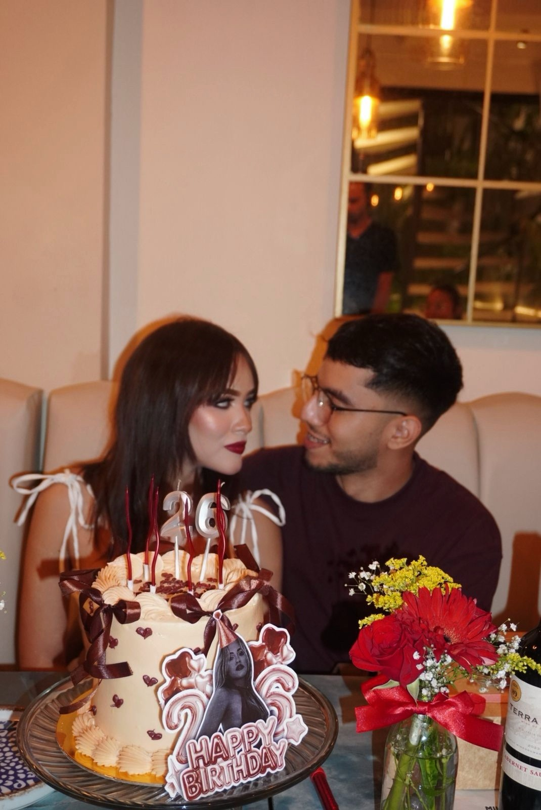
Cómo nos miramos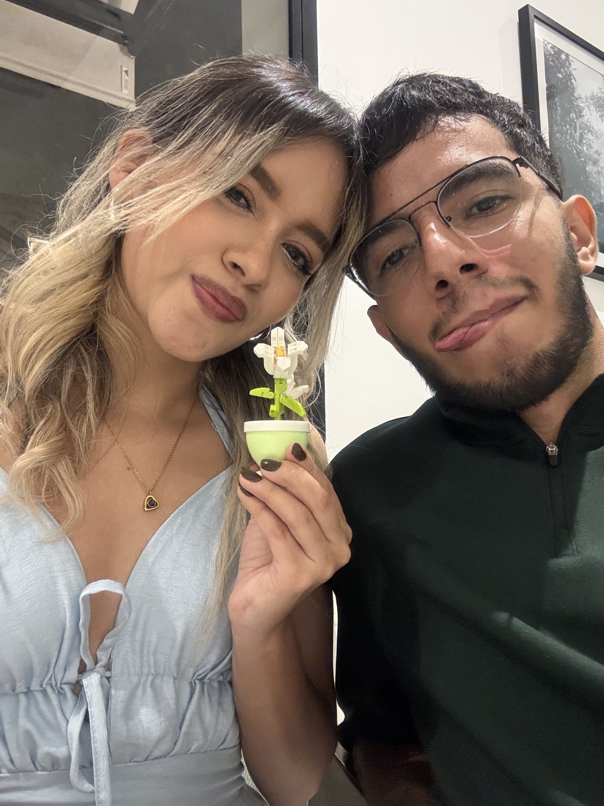
Siempre felices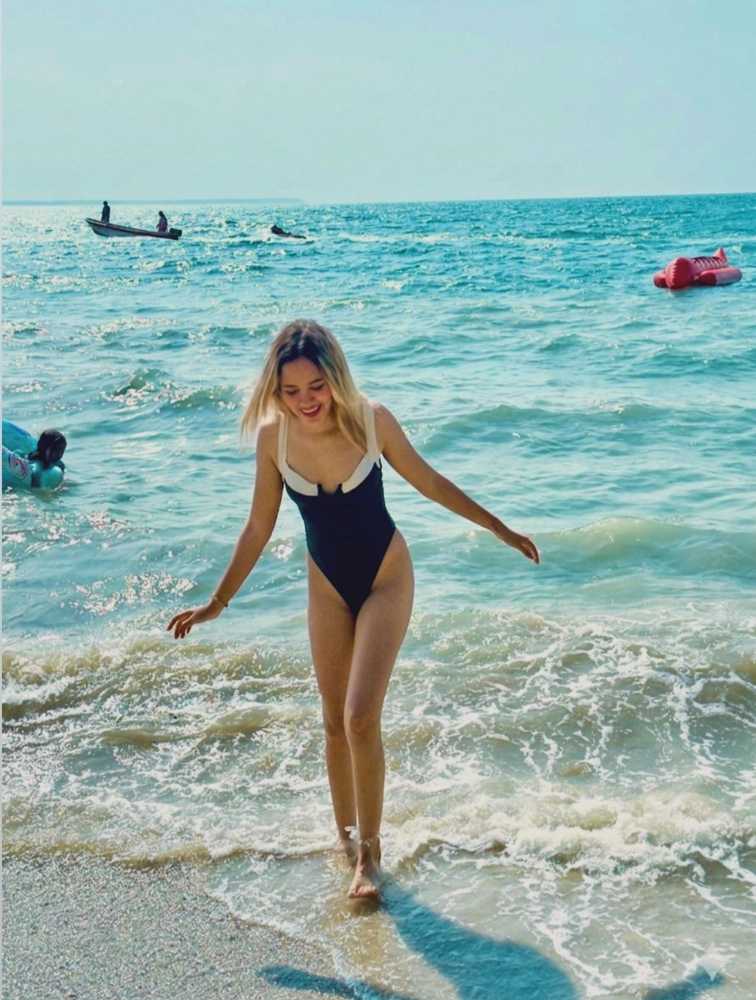
Verte libre y feliz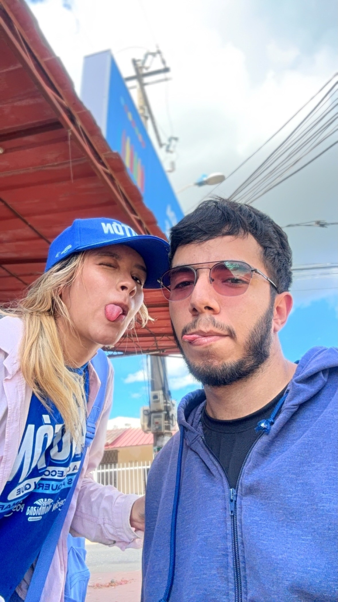
Nuestras bobadasA veces cierro los ojos y me acuerdo de aquel 6 de marzo, nuestra primera salida a comer helado, cuando todavía no imaginábamos todo lo que íbamos a vivir, ni teniamos la remota idea que terminariamos juntos.
Pero sobre todo me acuerdo del 6 de junio. Ese día recuerdo que estabas un poco bajoneada, pero yo sabía que ese día tenía que ser especial, así que te invité a comer pizza para levantarte el ánimo. Luego, en tu casa, yo estaba muerto de los nervios cuando te entregué aquella carta.
Al final de la carta te pedía que buscaras el collar que te había regalado unos días antes y que pusieras el ojo para mirar dentro del dije... Quería que supieras que, desde días atrás, tú ya tenías en tus manos que yo quería ser tu novio, aunque ya tu por tu cuenta, y por culpa de Antonella, ya lo habías descubierto jajaja. Pero ese 6 de junio ha sido uno de los mejores días de toda mi vida.
Cuando veo esta foto tuya con ese collar puesto y esa florecita blanca en la mano, cumpliendo un año de ser novios, me acuerdo de ese Jairo nervioso que solo quería hacerte feliz, y de por qué hoy no estoy dispuesto a dejarte ir.
Andy, te juro que entiendo tu decepción. Te oculté mis deudas y mis problemas por mucho tiempo y con eso rompí tu confianza. Por miedo o por creer que podía taparlo solo, hice que te sintieras engañada por la persona en la que más confiabas.
Y para rematar, cuando te prometí el trabajo remoto para que pudieras estar tranquila, justo el primer día que empezabas me despiden. Me siento el peor hombre del mundo al ver cómo algo que te había prometido se nos caía de las manos el primer día.
Pero lo que más me duele y más culpa me da todos los días es que por mi culpa hoy estés viviendo con tu mamá y tu hermana. Yo sé lo mala que es la convivencia allá. Sé que no te gusta estar ahí, y menos después de que ya te habías acostumbrado a vivir sola, a tener tu privacidad, tus cosas a tu manera y tu independencia. Cosas que allá no tienes.
Por eso no vengo a hacerte más promesas falsas ni vacías. Tampoco busco redención inmediata, porque sé que no puedo pedirte que vuelvas a confiar en mí de la noche a la mañana. Sé que la confianza y tu tranquilidad se recuperan con hechos, no hablando bonito. Solo quiero que sepas que me duele en el alma haberte puesto en esa situación y que me estoy moviendo para que salgamos de este hueco.
Mira a Damon en estas fotos, estirado en la cama, tranquilo con su pecherita o durmiendo hecho bolita. Esa paz de tener tu propio cuarto, tu silencio, tu cama y tu independencia sin nadie molestando no se perdió para siempre.
Sé que hoy aguantar la convivencia donde tu mamá es horrible para ti. Pero ten la certeza de que esto es temporal. Vas a volver a tener esa calma donde tú y Damon estén en paz.
No quiero que los problemas de hoy tapen todo lo lindo que hemos vivido.
Cada vez que veo esta foto me doy cuenta de que esa mirada entre tú y yo no se finge. Cuando estamos bien, nos miramos con un amor que vale la pena defender.
Así te quiero ver otra vez, tranquila, riéndote, sin preocupaciones encima. Recordar esa sonrisa tuya es lo que me da fuerzas hoy para levantarme y buscar trabajo sin cansarme.
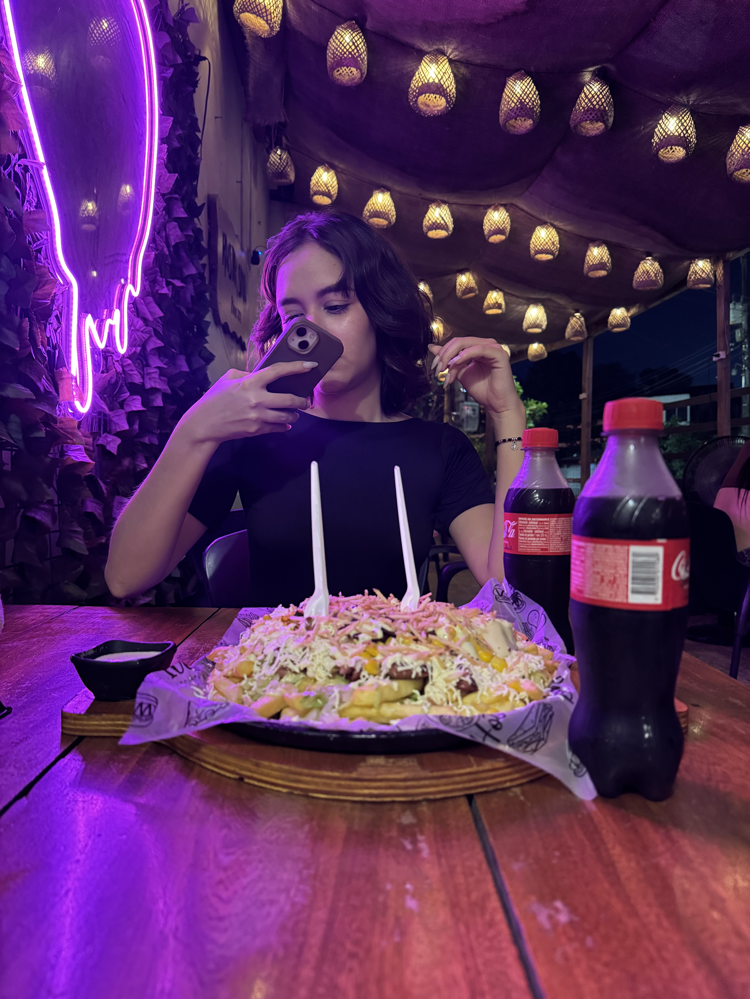
Nosotros nunca necesitamos lujos para pasarla increíble, solo estar tranquilos y sin secretos.
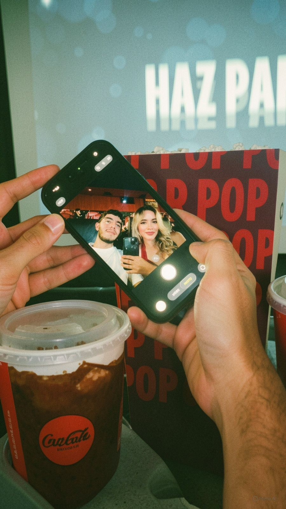
04Desde aquel primer helado, la pizza del 6 de junio o nuestras idas a cine. Contigo cualquier plan sencillo se siente especial.
Sacar la lengua en plena calle, hacernos muecas, decir cualquier bobada, hacer como gatos o ladrar como perros y reírnos de cualquier cosa. Esa complicidad tan nuestra es demasiado bonita como para dejarla morir por un mal momento.
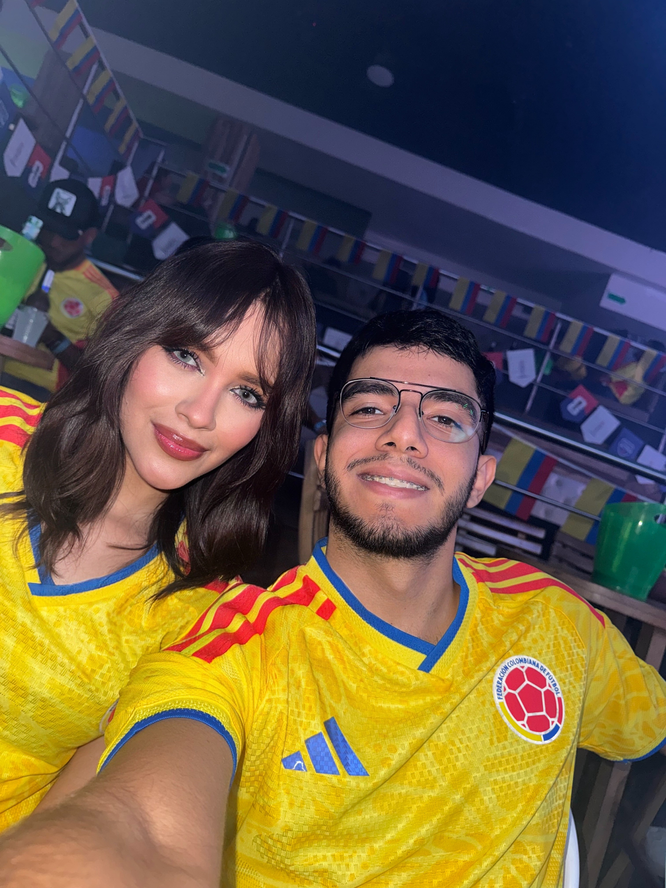
06Mi gran error fue creer que podía cargar con las deudas y mis problemas a escondidas en vez de hablarte claro. Hoy ya no tengo nada que ocultarte, sabes toda mi verdad, y desde cero quiero que estemos del mismo lado.
Toca cualquier foto para abrirla en pantalla completa.
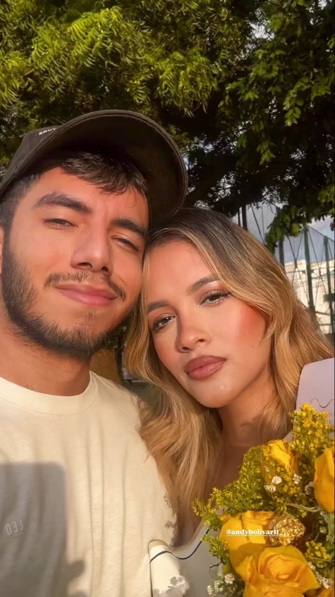
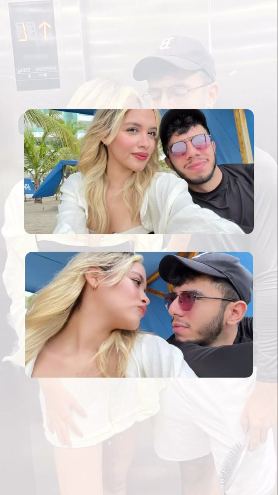
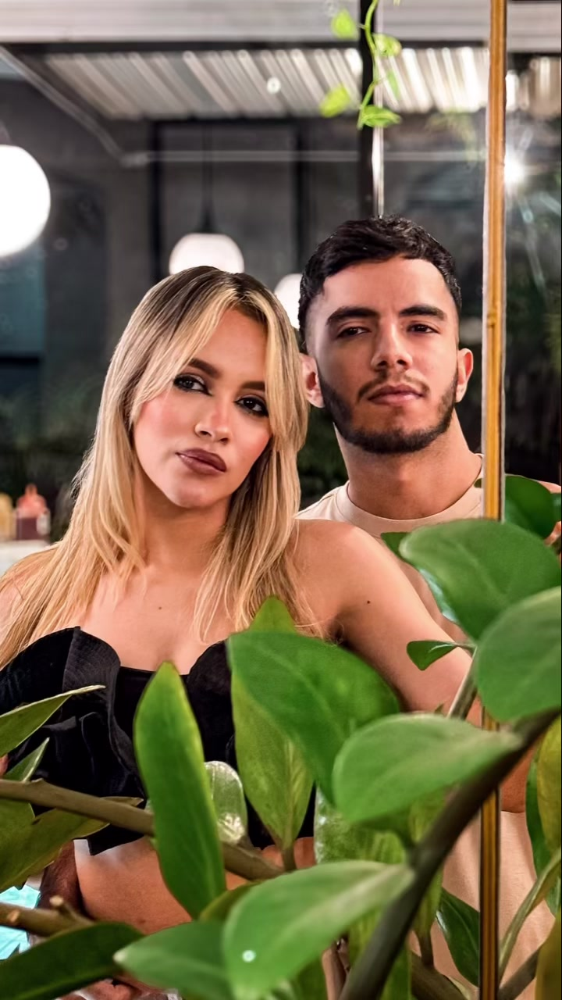
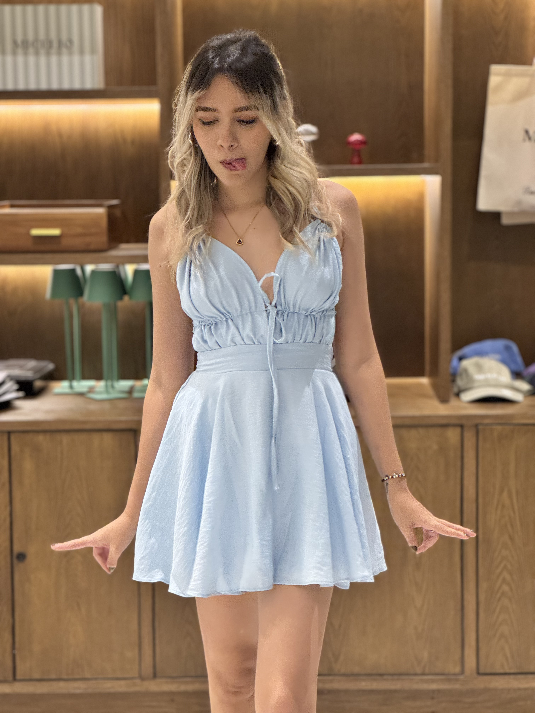
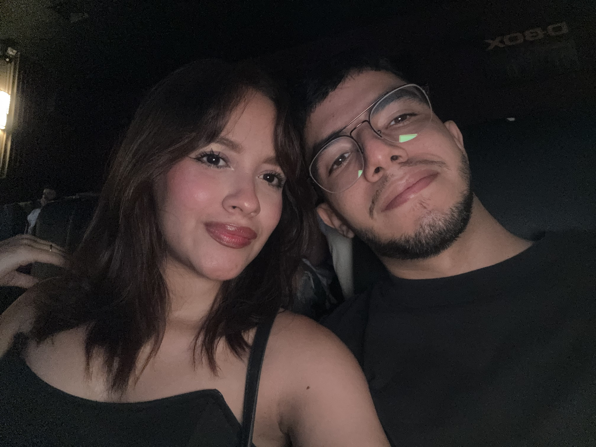
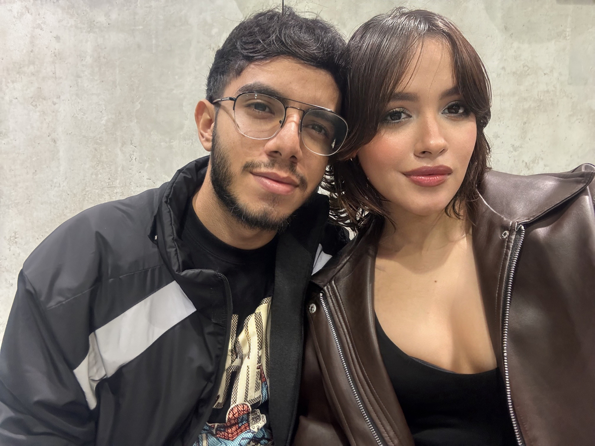
Yo sé que hoy no tengo cómo exigirte nada. Sé que recuperar tu confianza va a tomar tiempo y que las palabras no bastan cuando te he fallado.
Por eso no quiero hacerte promesas vacías. Solo quiero que al ver nuestras fotos, a Damon y todo lo que hemos vivido desde aquel helado, sientas que todavía hay esperanza para nosotros.
Me estoy esforzando para levantarnos, para que salgas de donde estás y recuperes tu espacio, tu privacidad y tu paz. Solo te pido que no me sueltes la mano ahora.
Te amo con toda mi vida, Andy. — Jairo ❤️